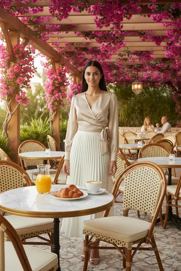
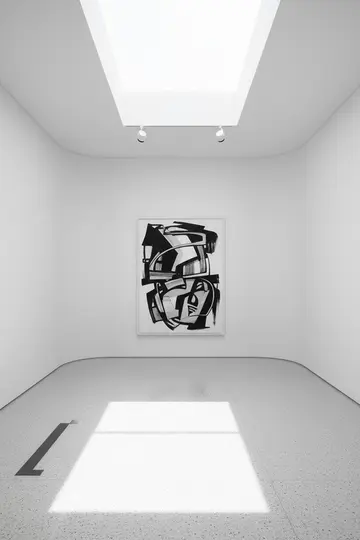
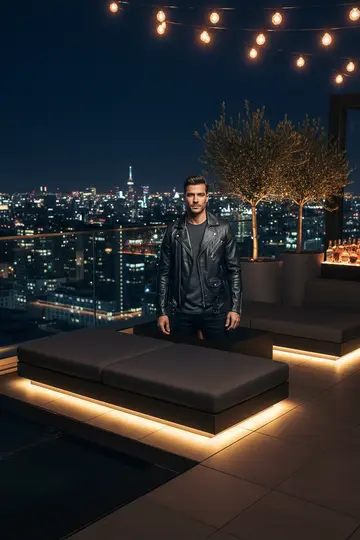
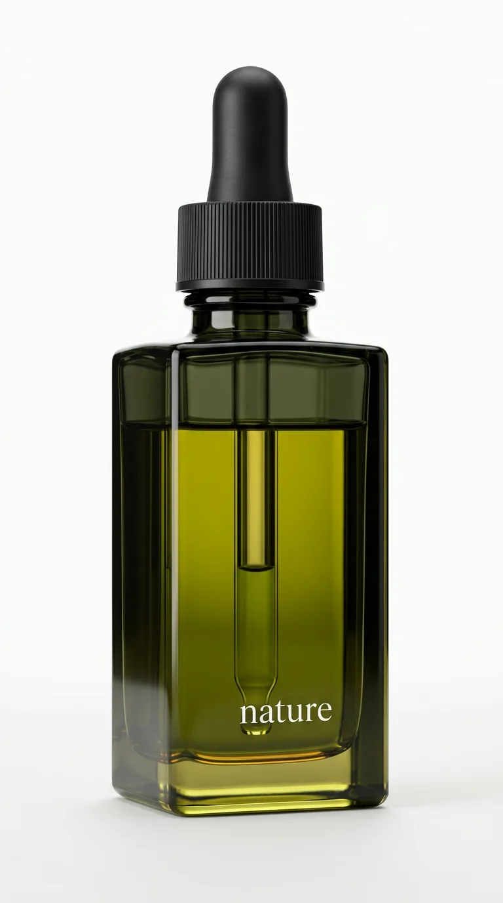
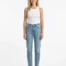

HUB · MODA
11 araçlık moda stüdyosu
Lookbook, sanal deneme, eskizden kıyafet, kumaştan tasarım, video şablonları. Tek kıyafet karesinden eksiksiz moda içeriği.
MODA & E-TİCARET AI STÜDYOSU · iOS + ANDROID
Ürün ya da kıyafetinin tek karesinden profesyonel görsel, video ve pazaryeri içeriğini cebinde üret. Stüdyo, ekip, çekim günü gerektirmeden.
Hediye kredi ile ücretsiz dene · Kart gerekmez · 500+ aktif satıcı
HAM KARE → AI SONUÇ


ÜRETİM ÇEKİRDEĞİ
Her satıcının ihtiyacı farklı. ListifyAI dört ayrı üretim hattını cebine sığdırır; istediğinden başla.
Lookbook, sanal deneme, eskizden kıyafet, kumaştan tasarım, video şablonları. Tek kıyafet karesinden eksiksiz moda içeriği.

Aynı üründen farklı sahnelerde, farklı açılarda profesyonel kareler.

Hareket ve efektle, ürününe özel akıcı tanıtım klibi.
Kıyafet fotoğrafından, otomatik manken ve sahne üretimiyle profesyonel moda videosu.
MODA STÜDYOSU · 11 ARAÇ
Kaydırdıkça araçlar yatay akar. Yana kaydır, araçlar arasında gez.

Küratör seçimi editoryal sahne şablonu, hazır kompozisyonla.

Tek ürün karesini gerçekçi AI mankene; çoklu poz ve sahne.

Yüz, arka plan ve pozu sen ayarla; tek kıyafetten lookbook.

Hazır video şablonu; otomatik manken ve sahne üretimi.

Kıyafeti mevcut manken fotoğrafına giydir; yüz ve poz korunur.

Çanta, kolye, küpe, saat, şapka; tek aksesuar odaklı denemeler.

Tasarım eskizini giyilebilir kıyafete çevirir; ayakkabı ve aksesuar da.

Kumaş dokusu fotoğrafından komple kıyafet tasarımı, saniyeler içinde.

Moda ya da ürün görselini özel prompt'la tanıtım videosuna.

Tek fotoğraftan 5 fazlı AI pipeline ile pro moda videosu.

Düşük çözünürlüğü 2K/4K'ya çıkar; detay kaybı olmadan.
Ürettiğin her sonucu uygulama içinde anında elden geçir.
VİDEO EVRENİ
Reels ve TikTok için dikey, 15 saniyelik moda videoları. Hazır şablonu seç, kıyafet karesini bırak, gerisini AI yapar.
hazır şablon
YUKARIDA: UYGULAMADAKİ VİDEO ŞABLONLARINDAN BİR SEÇKİ
Lüks mermer, sanatsal stüdyo, sahil, orman, dağ, ev içi. Ürünün ya da kombinin için doğru atmosferi seç.
E-TİCARET HATTI
Fotoğraftan sahneye, başlığa, dosyaya. Dört adım, dört araç, tek akış.

Telefonla çek, ürünü yükle. Tek kare yeter.

600+ sahne, toplu işlem.
Başlık, açıklama, anahtar kelime, SSS otomatik.
Platforma özel CSV/XLSX + sütun eşleme. Dosyayı indir, yükle.
Marketplace Export, platforma uygun dosya (CSV/XLSX) üretir ve sütunları otomatik eşler. Doğrudan API bağlantısı değil, indirip yüklediğin bir dosyadır.
UGC VİDEO
Ürününü tanıtan sanal AI sunucular. Senaryoyu yaz, avatarı seç; kamera karşısına geçmeden samimi tanıtım videosu.
Ayrıca "Visia" AI yönetmen akışıyla özel ürün videosu üretimi.

aktif satıcı
üretim aracı
video şablonu
ürün sahnesi
store puanı · 45 yorum
App Store + Google Play
45 değerlendirme
Yorumlar, kullanıcı geri bildirimlerinden örnek niteliğindedir.
PLANLAR
Detaylı fiyatlandırma uygulamada. Kart bilgisi olmadan dene.
Yeni başlayan satıcı için temel üretim.
Düzenli içerik üreten satıcı için en iyi denge.
Yüksek hacimli atölye ve mağaza için.
Ekip / kurumsal plan için: info@listifyai.com.tr
Ürün ya da kıyafetinin tek bir fotoğrafını yükle, kullanmak istediğin aracı ve sahneyi seç. AI saniyeler ya da dakikalar içinde profesyonel görsel, video veya pazaryeri metnini üretir. Tüm akış mobil uygulamada.
Çıktılar gerçekçi manken, doğru kumaş dokusu ve profesyonel sahne ışığı hedefler. Pro planda kalite modu ve 4K + AI upscale ile detay kaybı olmadan yüksek çözünürlük alırsın.
7 platform için (Trendyol, Shopify, Amazon, Etsy, Hepsiburada, N11, WooCommerce) platforma özel CSV/XLSX dosyası üretir ve sütunları otomatik eşler. Dosyayı indirip ilgili pazaryerine yüklersin; doğrudan API bağlantısı değildir.
Görsellerin senin Firebase Storage alanında şifreli olarak tutulur ve model eğitiminde kullanılmaz. İçeriğin sana ait kalır.
Evet. ListifyAI hem App Store'da hem Google Play'de yayında. Hediye kredi ile ücretsiz başlarsın, kart bilgisi gerekmez.
Toplam 28 araç: 4 ana stüdyo (Ürün Çekim, Moda, Ürün Video, Moda Video), 11 moda aracı, 5 düzenleme aracı, e-ticaret için Ürün İçeriği / Ürün Stüdyo / Marketplace Export, bir de UGC ve özel ürün videosu.
Tek fotoğrafı yükle, ilk profesyonel sonucunu birkaç dakikada al.
Hediye kredi · Kart gerekmez
Hediye krediyle dene
Kart yok · iOS + Android